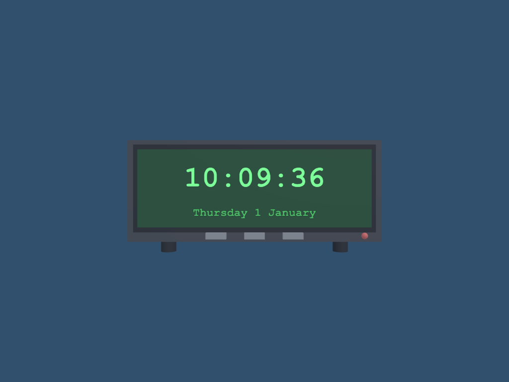

3.6 · Build a digital clock: primitives and 3D text in the world
Goal: a desk clock made from primitives (cubes, a sphere, two cylinders) whose screen shows the real time and date as 3D text that lives in the world. You practise the same things as page 3.5 (objects, hierarchy, materials, a script) and add one new idea: world-space text.

Download: the finished project, also in examples/digital-clock. Open nord.project.json in Nord and press Play. Allow 30 minutes to build it yourself. Do page 3.5 first if you have never used the editor.
1 Create the project#
In the editor: New project, name it digital-clock, pick 3D and press Create. Then Window ▸ Panels ▸ Project ▸ Project properties: Game size 800 × 500, Background #31506e, Physics none, and press Apply project properties.
In the file nord.project.json (check what the editor wrote):
"display": { "width": 800, "height": 500, "scale": "fit", "pixelArt": false, "background": "#31506e" },
"physics": { "engine": "none", "gravity": [0, 0, 0] }Axes. X points right, Y up, Z forward (into the screen). The clock's front faces the camera, which sits at negative Z looking along +Z. So "in front of" the clock means a smaller (more negative) Z.
2 The case and the parts#
2.1 The empty parent#
- Hierarchy ▸ + Create ▸ Empty, rename it
Digital Clock(F2). Position0, 0, 0. - Everything below becomes its child: drag each new object onto
Digital Clockin the Hierarchy (or right-click it ▸ Create child).
2.2 Nine parts from primitives#
Make each object with Hierarchy ▸ + Create ▸ Cube / Sphere / Cylinder, rename it and set its Transform exactly as in the table. Materials come in step 2.3; leave them white for now.
| Object | Create ▸ | Position | Scale | Material |
|---|---|---|---|---|
Case |
Cube | 0, 0, 0.5 | 10, 4, 1 | case |
Bezel |
Cube | 0, 0.1, −0.1 | 9.4, 3.4, 0.2 | bezel |
Screen |
Cube | 0, 0.1, −0.25 | 9, 3, 0.1 | screen |
Button 1 |
Cube | −1.5, −1.75, −0.1 | 0.8, 0.25, 0.2 | button |
Button 2 |
Cube | 0, −1.75, −0.1 | 0.8, 0.25, 0.2 | button |
Button 3 |
Cube | 1.5, −1.75, −0.1 | 0.8, 0.25, 0.2 | button |
LED |
Sphere | 4.3, −1.75, −0.1 | 0.25, 0.25, 0.25 | led |
Foot Left |
Cylinder | −3.5, −2.15, 0.5 | 0.6, 0.3, 0.6 | bezel |
Foot Right |
Cylinder | 3.5, −2.15, 0.5 | 0.6, 0.3, 0.6 | bezel |
Why these numbers (all in units; the case is 10 wide and 4 high):
- The Case is a block 10 × 4 × 1 whose front face is at
Z = 0(centreZ = 0.5, half the depth). - The Bezel (a dark frame) is a bit smaller and sticks 0.2 out of the front. The Screen is smaller still and sits in front of the bezel, so you see three layers: case, frame, glass. That is why each part has a more negative Z than the one behind it.
- The three Buttons and the LED sit in the thin strip under the screen (
Y = −1.75). - The Feet are two cylinders. A cylinder is 2 high by default, so scale Y
0.3makes them0.6tall.
In the file scenes/main.scene.json, one part inside the children of Digital Clock (the screen):
{ "name": "Screen", "transform": { "pos": [0, 0.1, -0.25], "rot": [0, 0, 0], "scale": [9, 3, 0.1] },
"components": [ { "type": "mesh", "shape": "box", "size": [1, 1, 1], "castShadow": true },
{ "type": "material", "asset": "assets/materials/screen.mat.json" } ] }2.3 Materials#
A material is a file that holds a colour and a surface look. Make five and assign them with Assets ▸ right-click ▸ New material (.mat.json), then drag each onto the part (or set Asset in its material component).
| Material | Colour | Used by |
|---|---|---|
case |
#1b1f27 |
Case |
bezel |
#0b0d12 |
Bezel, both Feet |
screen |
#0a2615 |
Screen (dark green glass) |
button |
#6b7380 |
the three Buttons |
led |
#e23b3b |
LED |
In the file assets/materials/screen.mat.json (new file):
{ "color": "#0a2615", "metallic": 0, "roughness": 0.6 }2.4 Camera and light#
Create a camera and a light as in page 3.5: Main Camera at 0, 0, −13 (looking along +Z, field of view 60) and a Directional Light. Press Play: you see the case, frame, glass, buttons and feet, but no numbers yet.
3 World-space text#
In a 3D scene the text component is a flat plane in the world with your words drawn on it (the Unity TextMesh). It follows the object's Transform, hides behind objects that are in front of it, and is lit by nothing: it glows like a screen.
- Select
Digital Clock, then Hierarchy ▸ + Create ▸ Text and make it a child. Rename itTime Text. - Position
0, 0.45, −0.32(the screen's front is atZ = −0.3, so the text floats 0.02 in front: if it were inside the screen you would not see it). - In the Inspector, on the
textcomponent: text12:34:56, size72, color#7dff9a, fontCourier New, monospace, bold on, aligncenter. - Make a second text,
Date Text: Position0, −0.85, −0.32, textThursday 1 January, size28, color#4fbf6a, same font, bold on.
In the file scenes/main.scene.json, inside the children of Digital Clock:
{ "name": "Time Text", "transform": { "pos": [0, 0.45, -0.32], "rot": [0, 0, 0], "scale": [1, 1, 1] },
"components": [ { "type": "text", "text": "12:34:56", "size": 72, "color": "#7dff9a",
"font": "Courier New, monospace", "bold": true, "align": "center" } ] }What you see: green numbers floating on the dark screen. Walk the camera around in the Scene view: the text is a real object, a flat sign in the world.
How big is it? The text is drawn at size pixels and one world unit is 64 pixels (the same as sprites). A size of 64 is about one unit tall. To make a text bigger or smaller without redrawing it, change the object's Scale.
Traps. Text is only visible from the front: from behind the plane is invisible (like Unity's TextMesh). If your text is invisible, check its Z is more negative than the screen's.
billboardon thetextcomponent makes it always turn to face the camera sideways, handy for name tags, not for a clock.
4 The script#
Now the part that makes it a clock. The script finds the two text objects, reads the time every frame and writes it into the text.
File: scripts/DigitalClock.js (new file, the whole file; put it in scripts/ and attach it to Digital Clock)
import { MonoBehaviour, SerializeField, EntityRef, UnityInput as Input, KeyCode } from 'nord';
const two = (n) => String(n).padStart(2, '0');
export default class DigitalClock extends MonoBehaviour {
static attributes = SerializeField({
timeText: EntityRef('Time Text'),
dateText: EntityRef('Date Text'),
use24Hour: true,
blinkColon: true,
});
Start() {
// GetComponent('TextMesh') is the Unity name for the `text` component
this.timeMesh = this.timeText.GetComponent('TextMesh');
this.dateMesh = this.dateText.GetComponent('TextMesh');
}
Update() {
if (Input.GetKeyDown(KeyCode.Space)) this.use24Hour = !this.use24Hour; // Space switches 24 h / 12 h
const now = new Date();
let hours = now.getHours();
const suffix = this.use24Hour ? '' : (hours >= 12 ? ' PM' : ' AM');
if (!this.use24Hour) hours = hours % 12 || 12;
const colon = this.blinkColon && now.getSeconds() % 2 === 1 ? ' ' : ':';
this.SetText(this.timeMesh, `${two(hours)}${colon}${two(now.getMinutes())}${colon}${two(now.getSeconds())}${suffix}`);
this.SetText(this.dateMesh, now.toLocaleDateString('en-GB', { weekday: 'long', day: 'numeric', month: 'long' }));
}
// only touch the text when it changed: redrawing a texture sixty times a second for nothing is wasteful
SetText(mesh, text) {
if (mesh.text !== text) mesh.text = text;
}
}What each part does
static attributes = SerializeField({ ... }): the fields in the Inspector.timeTextanddateTextare EntityRef fields (an object slot, like aTextMeshfield in Unity);use24HourandblinkColonare check boxes.this.timeText.GetComponent('TextMesh'):'TextMesh'is the Unity name of thetextcomponent. The object you dragged into the slot isthis.timeTextitself; there is noFindto write.now.getHours(),now.getMinutes(),now.getSeconds(): the browser's clock, the same as C#DateTime.Now.String(n).padStart(2, '0'): turns7into07so the clock always shows two digits.SetTextonly writes when the text changed. Redrawing the text texture 60 times a second for the same words would be wasted work.
Attach it and fill the slots#
- Assets ▸ right-click
scripts▸ New MonoBehaviour script, name itDigitalClock, replace the whole file with the code above. - Select
Digital Clock, Inspector ▸ + Add script ▸ scripts/DigitalClock.js. - Drag
Time Textfrom the Hierarchy onto the timeText slot, andDate Textonto dateText.
In the file scenes/main.scene.json, on Digital Clock (the editor stores the object's id; a name works too):
"scripts": [ { "path": "scripts/DigitalClock.js",
"attributes": { "timeText": "Time Text", "dateText": "Date Text", "use24Hour": true, "blinkColon": true } } ]Press Play. The numbers show the real time and the colons blink once a second. Press Space to switch between 24-hour (15:10:39) and 12-hour (03:10:39 PM).
5 Make it your own#
- Colour by time: write
this.timeMesh.color = Color.red;when the seconds are00(addColorto theimport). - A bigger screen: change the Scale of
Digital Clockto1.5, 1.5, 1.5. Everything, text included, grows together because the parts are its children. - Add the sounds from page 9.5: a tick every second and a chime on the hour.
- Flip-clock digits: make six
textobjects (one per digit) and move each one when it changes.
Check yourself:
- Play: the screen shows your computer's time, and the colons blink.
- Space switches 24-hour and 12-hour.
- In the Scene view, orbit with Alt + left mouse: the text stays on the screen and turns with the clock.
Next: 4 · Game Manager, or add sound with 9.5 · A music player and sound effects.